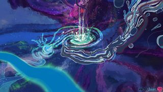
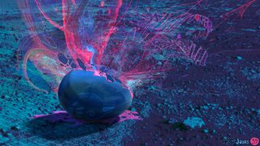
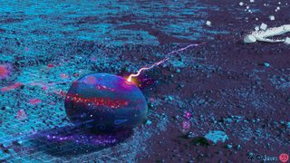

Jour 39: Les Noces Chimiques
Images de remplacement ou variantes archivées. L’article associé présente les animations Flash.
Ouvrir l’imageFichiers conservés
Les noces chimiques — images

Informations du fichier
- Nom conservé
- saison6_39bx.jpg
- Taille
- 111,180 octets
- SHA-256
- 49c745c844fe79ee9c2261f766d4985f1c2d035e5702ef9b6831342533a16330
Les noces chimiques — images


Informations du fichier
- Nom conservé
- saison6_39cx.jpg
- Taille
- 160,491 octets
- SHA-256
- b549bf6061d39661f9e7129d64c89fd2572e1fd7a1fd561fd6835fc6600982ba
Les noces chimiques — images


Informations du fichier
- Nom conservé
- saison6_39ex.jpg
- Taille
- 205,737 octets
- SHA-256
- c2364a91acd2d666717472c38865c71bc064562179f908945d171a93547705f2
Les noces chimiques — images


Informations du fichier
- Nom conservé
- saison6_39x.jpg
- Taille
- 235,717 octets
- SHA-256
- 074dea7d1b589117683fdbfa34d572cfdf098d6b195abda21c59bf7632ec485c